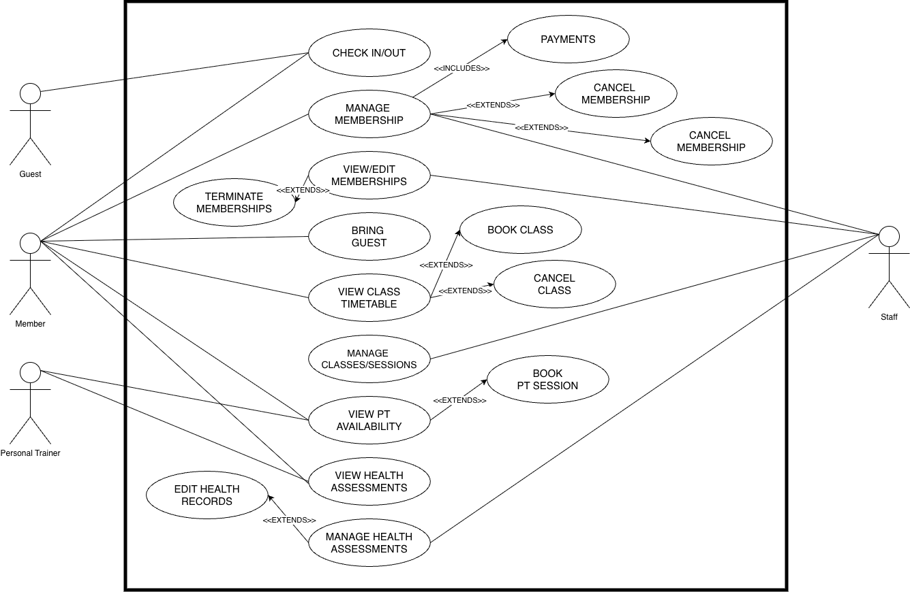
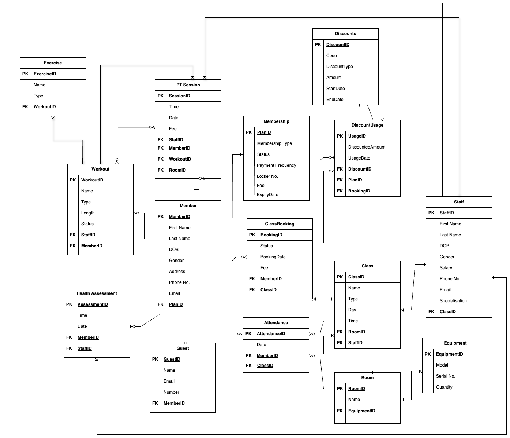

Gym Management Database System
A fully designed and implemented relational database system for managing members, subscriptions, bookings and staff operations. Built as part of a university group project, the system includes entity-relationship modelling, normalization, constraints, and SQL queries.
For one of my university group projects we built a fully working Gym Management System database using
Oracle APEX. The goal was simple. Design a realistic system that could actually run a gym. Not just
store names and numbers but handle memberships, bookings, personal training sessions, discounts,
attendance and more.

We started with the design. Before writing a single line of SQL we identified all the strong and
weak entities. Members, Staff, Membership Plans, Classes, Workouts, Class Bookings,
Guests.
Then we built a full ERD and carefully defined the relationships between everything. Every foreign key had a purpose. Every table had a reason to exist. That part taught me how important structure is before implementation.
After that we mapped the ERD into a fully normalised relational model. Everything was brought into
Third Normal Form. No transitive dependencies. No attributes depending on non key columns. Just
clean structure and clarity.
Then came the SQL. We wrote DDL scripts for over fifteen tables including Member, Staff, PT Session,
Attendance, Discount Usage and more. Primary keys were defined properly. Foreign key constraints
were added using alter table so referential integrity was enforced across the entire system.
CREATE TABLE Staff (
StaffID NUMBER PRIMARY KEY,
First_Name VARCHAR2(100),
Last_Name VARCHAR2(100),
DOB DATE,
Gender VARCHAR2(10),
Salary NUMBER,
Phone_No VARCHAR2(20),
Email VARCHAR2(100),
Specialisation VARCHAR2(100)
);
CREATE TABLE Member (
MemberID NUMBER PRIMARY KEY,
First_Name VARCHAR2(100),
Last_Name VARCHAR2(100),
DOB DATE,
Gender VARCHAR2(10),
Address VARCHAR2(255),
Phone_No VARCHAR2(20),
Email VARCHAR2(100),
PlanID NUMBER
);
Populating the database required planning as well. We inserted into independent tables first such as
Equipment and Discounts. Then we populated the dependent tables once foreign key references existed.
That order mattered. It prevented constraint errors and forced us to think logically about data
flow.
The most interesting part for me was writing analytical queries. We created queries to list all
classes with instructors, calculate monthly revenue across memberships and bookings, identify the
top trainers by session count, and even detect members whose memberships expired but were still
attending the gym. That is when the database started to feel real. It stopped being tables and
started being insight.
SELECT
SUM(m.FEE) AS Membership_Revenue,
SUM(pt.FEE) AS PT_Session_Revenue,
SUM(cb.FEE) AS Class_Booking_Revenue,
(SUM(m.FEE) + SUM(pt.FEE) + SUM(cb.FEE)) AS Total_Revenue
FROM
MEMBERSHIP m
LEFT JOIN PT_SESSION pt ON pt.MEMBERID = m.PLANID
LEFT JOIN CLASSBOOKING cb ON cb.MEMBERID = m.PLANID
WHERE
TO_CHAR(m.EXPIRYDATE, 'MM-YYYY') = '12-2024'
OR TO_CHAR(pt.SESSIONDATE, 'MM-YYYY') = '12-2024'
OR TO_CHAR(cb.BOOKINGDATE, 'MM-YYYY') = '12-2024';
SELECT
m.FIRST_NAME || ' ' || m.LAST_NAME AS Member_Name,
m.EMAIL,
m.PHONE_NO,
mem.EXPIRYDATE,
a.ATTENDANCEDATE
FROM
MEMBER m
INNER JOIN
MEMBERSHIP mem ON m.PLANID = mem.PLANID
INNER JOIN
ATTENDANCE a ON a.MEMBERID = m.MEMBERID
WHERE
mem.EXPIRYDATE < SYSDATE
AND a.ATTENDANCEDATE BETWEEN SYSDATE - 30 AND SYSDATE;
We also implemented triggers to automate business logic. Membership status automatically changes to
inactive once expired. Class capacity decreases when someone books a spot. Members can be notified
before expiry. That was the point where it moved beyond basic CRUD and into automation.
Looking back, this project forced me to think like a systems designer. Not just writing code but
designing rules, enforcing integrity, and thinking about how data behaves in the real world. We also
discussed security considerations and how a system like this would need encryption and stronger
protection if deployed in production.
It was a proper foundational database project. Structured. Logical. Clean.
And honestly it made me appreciate backend systems more than ever.